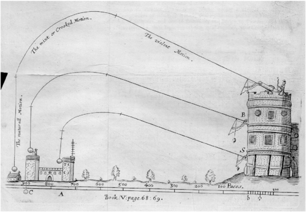

21 Implications of continuity
#| output: false
#| echo: false
## Formatting options are included here; not in CalculusWithJulia.WeaveSupport
using QuizQuestions
nothing#| output: false
#| echo: false
fig_size=(800, 600)
nothing#| output: false
#| echo: false
import Logging
Logging.disable_logging(Logging.Info) # or e.g. Logging.Info
Logging.disable_logging(Logging.Warn)
nothing#| eval: false
#| echo: false
import SymPy
function Base.show(io::IO, ::MIME"text/html", x::T) where {T <: SymPy.SymbolicObject}
println(io, "<span class=\"math-left-align\" style=\"padding-left: 4px; width:0; float:left;\"> ")
println(io, "\\[")
println(io, sympy.latex(x))
println(io, "\\]")
println(io, "</span>")
end
#| output: false
#| echo: false
# ImageFile
## WeaveSupport from CalculusWithJulia package
## moved here to lighten up CwJ package
import Base64: base64encode
import Markdown
using Mustache
using Tables
# q and L
using LaTeXStrings
macro q_str(x)
"`$x`"
end
"""
Take an image file and encode it
## Examples
ImageFile("http://...", "caption")
ImageFile("/fullpath/to_file/", "caption")
ImageFile(:integrals, "figures/pic.png", "caption")
ImageFile(p, "caption") # p a Plot object
"""
mutable struct ImageFile
f
caption
alt
width
content
end
# 2 args f, caption
ImageFile(f,caption=""; alt="A Figure", width=nothing) = ImageFile(f, caption, alt, width)
# 3 args dir, f, caption
function ImageFile(dir::Symbol, f::AbstractString, caption;
alt="A Figure", width=nothing)
basedir = replace(dirname(@__DIR__), "/src" => "")
#fname = joinpath(basedir, "CwJ", string(dir), f)
fname = joinpath(basedir, string(dir), f)
ImageFile(fname, caption, alt, width)
end
# plot -> string for file
function ImageFile(f, caption, alt, width)
imgfile = tempname() * ".gif"
io = open(imgfile, "w")
show(io, "image/png", f)
close(io)
ImageFile(imgfile, caption, alt, width)
end
gif_to_img_tpl = Mustache.mt"""
<img src="data:image/gif;base64,{{{:data}}}" class="card-img-top" alt="{{{:alt}}}">
"""
function ImageFile(f::AbstractString, caption, alt, width)
fcontent = occursin(r"^http", f) ? read(download(f), String) : read(f, String)
data = base64encode(fcontent)
content = Mustache.render(gif_to_img_tpl, data=data, alt=alt)
ImageFile(f, caption, alt, width, content)
end
function Base.show(io::IO, m::MIME"text/html", x::ImageFile)
content = x.content
if content == nothing
data = (read(x.f, String))
content = gif_to_image(data=data, alt="figure")
end
caption = (Markdown.html ∘ Markdown.parse)(x.caption)
print(io, """<div class="d-flex justify-content-center">""")
print(io, " <figure>")
print(io, content)
print(io, " <figcaption>")
print(io, caption)
print(io, """
</figcaption>
</figure>
</div>
""")
end
import TextWrap
function Base.show(io::IO, m::MIME"text/plain", x::ImageFile)
caption = (TextWrap.wrap ∘ Markdown.plain ∘ Markdown.parse)(x.caption)
println(io, """
---------------------------------
|
| see online version for |
| image |
| |
--------------------------------
""")
println(io, caption)
return nothing
end
# hack to work around issue
# import Markdown
# import CalculusWithJulia
# function CalculusWithJulia.WeaveSupport.ImageFile(d::Symbol, f::AbstractString, caption; kwargs...)
# nm = joinpath("..", string(d), f)
# u = ""
# Markdown.parse(u)
# end
# Table
#| echo: false
#https://github.com/TheRoniOne/MDTable.jl/blob/master/src/write.jl
function MDTable(io::IO, df)
rows = Tables.rows(df)
sch = Tables.schema(rows)
names = Tables.columnnames(rows)
header = true
headers::String = ""
for i in 1:length(names)
if i != length(names)
headers = headers * "| $(names[i]) "
else
headers = headers * "| $(names[i]) " * "|\n"
end
end
print(io, headers)
println(io, "| --- " ^ length(names) * "|")
for row in rows
line::String = ""
Tables.eachcolumn(sch, row) do val, i, nm
print(io, "| ", chomp(string(val)))
end
println(io, "|")
end
end
Table(d) = Markdown.parse(sprint(io -> MDTable(io, d)))
table(d) = Table(d)
# HTMLoutput
struct HTMLoutput
x
centered::Bool
caption::String
HTMLoutput(x; centered::Bool=false, caption::String="") = new(x, centered, caption)
end
function Base.show(io::IO, ::MIME"text/html", x::HTMLoutput)
if !x.centered
txt = x.x
else
centered_content_tpl = """
<div class="d-flex justify-content-center">
<div class="card border-light mx-3 px-3 my-3 py-3" style="{{#:width}}width={{:width}}px{{/:width}}{{^:width}} max-width: 560px;{{/:width}}">
{{{:content}}}
<div class="card-footer text-muted">
{{{:caption}}}
</div>
</div>
</div>
"""
txt = Mustache.render(centered_content_tpl; content=x.x, caption=x.caption)
end
print(io, txt)
end
function Base.show(io::IO, m::MIME"text/plain", x::HTMLoutput)
caption = (TextWrap.wrap ∘ Markdown.plain ∘ Markdown.parse)(x.caption)
println(io, "Content available in online version")
println(io, caption)
return nothing
end
nothingThis section uses these add-on packages:
using CalculusWithJulia
using Plots
plotly()
using Roots
using SymPyContinuity for functions is a valued property which carries implications. In this section we discuss two: the intermediate value theorem and the extreme value theorem. These two theorems speak to some fundamental applications of calculus: finding zeros of a function and finding extrema of a function.
21.1 Intermediate Value Theorem
The intermediate value theorem: If \(f\) is continuous on \([a,b]\) with, say, \(f(a) < f(b)\), then for any \(y\) with \(f(a) \leq y \leq f(b)\) there exists a \(c\) in \([a,b]\) with \(f(c) = y\).
#| hold: true
#| echo: false
#| cache: true
### {{{IVT}}}
gr()
function IVT_graph(n)
f(x) = sin(pi*x) + 9x/10
a,b = [0,3]
xs = range(a,stop=b, length=50)
## cheat -- pick an x, then find a y
Δ = .2
x = range(a + Δ, stop=b - Δ, length=6)[n]
y = f(x)
plt = plot(f, a, b, legend=false, size=fig_size)
plot!(plt, [0,x,x], [f(x),f(x),0], color=:orange, linewidth=3)
plt
end
n = 6
anim = @animate for i=1:n
IVT_graph(i)
end
imgfile = tempname() * ".gif"
gif(anim, imgfile, fps = 1)
caption = L"""
Illustration of intermediate value theorem. The theorem implies that any randomly chosen $y$
value between $f(a)$ and $f(b)$ will have at least one $x$ in $[a,b]$
with $f(x)=y$.
"""
plotly()
ImageFile(imgfile, caption)In the early years of calculus, the intermediate value theorem was intricately connected with the definition of continuity, now it is a consequence.
The basic proof starts with a set of points in \([a,b]\): \(C = \{x \text{ in } [a,b] \text{ with } f(x) \leq y\}\). The set is not empty (as \(a\) is in \(C\)) so it must have a largest value, call it \(c\) (this might seem obvious, but it requires the completeness property of the real numbers). By continuity of \(f\), it can be shown that \(\lim_{x \rightarrow c-} f(x) = f(c) \leq y\) and \(\lim_{y \rightarrow c+}f(x) =f(c) \geq y\), which forces \(f(c) = y\).
21.1.1 Bolzano and the bisection method
Suppose we have a continuous function \(f(x)\) on \([a,b]\) with \(f(a) < 0\) and \(f(b) > 0\). Then as \(f(a) < 0 < f(b)\), the intermediate value theorem guarantees the existence of a \(c\) in \([a,b]\) with \(f(c) = 0\). This was a special case of the intermediate value theorem proved by Bolzano first. Such \(c\) are called zeros of the function \(f\).
We use this fact when building a “sign chart” of a polynomial function. Between any two consecutive real zeros the polynomial can not change sign. (Why?) So a “test point” can be used to determine the sign of the function over an entire interval.
The sign_chart function from CalculusWithJulia uses this to indicate where an assumed continuous function changes sign:
f(x) = sin(x + x^2) + x/2
sign_chart(f, -3, 3)The intermediate value theorem can find the sign of the function between adjacent zeros, but how are the zeros identified?
Here, we use the Bolzano theorem to give an algorithm - the bisection method - to locate a value \(c\) in \([a,b]\) with \(f(c) = 0\) under the assumptions: * \(f\) is continuous on \([a,b]\) * \(f\) changes sign between \(a\) and \(b\). (In particular, when \(f(a)\) and \(f(b)\) have different signs.)
The bisection method is used to find a zero, \(c\), of \(f(x)\) between two values, \(a\) and \(b\). The method is guaranteed to work under assumptions, the most important being the continuous function having different signs at \(a\) and \(b\).
#| hold: true
#| echo: false
#| cache: true
## {{{bisection_graph}}}
gr()
function bisecting_graph(n)
f(x) = x^2 - 2
a,b = [0,2]
err = 2.0^(1-n)
title = "b - a = $err"
xs = range(a, stop=b, length=100)
plt = plot(f, a, b, legend=false, size=fig_size, title=title)
if n >= 1
for i in 1:n
c = (a+b)/2
if f(a) * f(c) < 0
a,b=a,c
else
a,b=c,b
end
end
end
plot!(plt, [a,b],[0,0], color=:orange, linewidth=3)
scatter!(plt, [a,b], [f(a), f(b)], color=:orange, markersize=5, markershape=:circle)
plt
end
n = 9
anim = @animate for i=1:n
bisecting_graph(i-1)
end
imgfile = tempname() * ".gif"
gif(anim, imgfile, fps = 1)
caption = L"""
Illustration of the bisection method to find a zero of a function. At
each step the interval has $f(a)$ and $f(b)$ having opposite signs so
that the intermediate value theorem guaratees a zero.
"""
plotly()
ImageFile(imgfile, caption)Call \([a,b]\) a bracketing interval if \(f(a)\) and \(f(b)\) have different signs. We remark that having different signs can be expressed mathematically as \(f(a) \cdot f(b) < 0\).
We can narrow down where a zero is in \([a,b]\) by following this recipe:
- Pick a midpoint of the interval, for concreteness \(c = (a+b)/2\).
- If \(f(c) = 0\) we are done, having found a zero in \([a,b]\).
- Otherwise it must be that either \(f(a)\cdot f(c) < 0\) or \(f(c) \cdot f(b) < 0\). If \(f(a) \cdot f(c) < 0\), then let \(b=c\) and repeat the above. Otherwise, let \(a=c\) and repeat the above.
At each step the bracketing interval is narrowed – indeed split in half as defined – or a zero is found.
For the real numbers this algorithm never stops unless a zero is found. A “limiting” process is used to say that if it doesn’t stop, it will converge to some value.
However, using floating point numbers leads to differences from the real-number situation. In this case, due to the ultimate granularity of the approximation of floating point values to the real numbers, the bracketing interval eventually can’t be subdivided, that is no \(c\) is found over the floating point numbers with \(a < c < b\). So there is a natural stopping criteria: stop when there is an exact zero, when the bracketing interval gets too small to subdivide, or when the interval is as small as desired.
We can write a relatively simple program to implement this algorithm:
function simple_bisection(f, a, b)
if f(a) == 0 return(a) end
if f(b) == 0 return(b) end
if f(a) * f(b) > 0 error("[a,b] is not a bracketing interval") end
tol = 1e-14 # small number (but should depend on size of a, b)
c = a/2 + b/2
while abs(b-a) > tol
if f(c) == 0 return(c) end
if f(a) * f(c) < 0
a, b = a, c
else
a, b = c, b
end
c = a/2 + b/2
end
c
endThis function uses a while loop to repeat the process of subdividing \([a,b]\). A while loop will repeat until the condition is no longer true. The above will stop for reasonably sized floating point values (within \((-100, 100)\), say), but, as written, ignores the fact that the gap between floating point values depends on their magnitude.
The value \(c\) returned need not be an exact zero. Let’s see:
c = simple_bisection(sin, 3, 4)This value of \(c\) is a floating-point approximation to \(\pi\), but is not quite a zero:
sin(c)(Even 1pi itself is not a “zero” due to floating point issues.)
21.1.2 The find_zero function.
The Roots package has a function find_zero that implements the bisection method when called as find_zero(f, (a,b)) where \([a,b]\) is a bracket. Its use is similar to simple_bisection above. This package is loaded when CalculusWithJulia is. We illlustrate the usage of find_zero in the following:
xstar = find_zero(sin, (3, 4))Notice, the call find_zero(sin, (3, 4)) again fits the template action(function, args...) that we see repeatedly. The find_zero function can also be called through fzero. The use of (3, 4) to specify the interval is not necessary. For example [3,4] would work equally as well. (Anything where extrema is defined works.)
This function utilizes some facts about floating point values to guarantee that the answer will be an exact zero or a value where there is a sign change between the next bigger floating point or the next smaller, which means the sign at the next and previous floating point values is different:
sin(xstar), sign(sin(prevfloat(xstar))), sign(sin(nextfloat(xstar)))Example
The polynomial \(p(x) = x^5 - x + 1\) has a zero between \(-2\) and \(-1\). Find it.
p(x) = x^5 - x + 1
c₀ = find_zero(p, (-2, -1))
(c₀, p(c₀))We see, as before, that \(p(c)\) is not quite \(0\). But it can be easily checked that p is positive at the next floating point number, while p is seen to be negative at the returned value:
p(c₀), sign(p(prevfloat(c₀))), sign(p(nextfloat(c₀)))Example
The function \(q(x) = e^x - x^4\) has a zero between \(5\) and \(10\), as this graph shows:
q(x) = exp(x) - x^4
plot(q, 5, 10)Find the zero numerically. The plot shows \(q(5) < 0 < q(10)\), so \([5,10]\) is a bracket. We thus have:
find_zero(q, (5, 10))Later, we will see more efficient algorithms to find a zero near a given guess. The bisection method finds a zero between two values of a bracketing interval. This interval need not be small. Indeed in many cases it can be infinite. For this particular problem, any interval like (2,N) will work as long as N is bigger than the zero and small enough that q(N) is finite or infinite but not NaN. (Basically, q must evaluate to a number with a sign. Here, the value of q(Inf) is NaN as it evaluates to the indeterminate Inf - Inf. But q is still not NaN for quite large numbers, such as 1e77, as x^4 can as big as 1e308 – technically floatmax(Float64) – and be finite.)
Example
Find all real zeros of \(f(x) = x^3 -x + 1\) using the bisection method.
We show next that symbolic values can be used with find_zero, should that be useful.
First, we produce a plot to identify a bracketing interval
@syms x
plot(x^3 - x + 1, -3, 3)It appears (and a plot over \([0,1]\) verifies) that there is one zero between \(-2\) and \(-1\). It is found with:
find_zero(x^3 - x + 1, (-2, -1))Example
The equation \(\cos(x) = x\) has just one solution, as can be seen in this plot:
f(x) = cos(x)
g(x) = x
plot(f, -pi, pi)
plot!(g)Find it.
We see from the graph that it is clearly between \(0\) and \(2\), so all we need is a function. (We have two.) The trick is to observe that solving \(f(x) = g(x)\) is the same problem as solving for \(x\) where \(f(x) - g(x) = 0\). So we define the difference and use that:
h(x) = f(x) - g(x)
find_zero(h, (0, 2))f(x) = g(x) and f(x) = c
The above shows a means to translate a given problem into one that can be solved with find_zero. Basically to solve either when a function is a non-zero constant or when a function is equal to some other function, the difference between the two sides is formed and turned into a function, called h above.
If using symbolic expressions, as below, then an equation (formed by ~) can be passed to find_zero:
@syms x
solve(cos(x) ~ x, (0, 2))Example: Inverse functions
If \(f(x)\) is monotonic and continuous over an interval \([a,b]\) then it has an inverse function. That is for any \(y\) between \(f(a)\) and \(f(b)\) we can find an \(x\) satisfying \(y = f(x)\) with \(a \leq x \leq b\). This is due, of course, to both the intermediate value theorem (which guarantees an \(x\)) and monotonicity (which guarantees just one \(x\)).
To see how we can numerically find an inverse function using find_zero, we have this function:
function inverse_function(f, a, b, args...; kwargs...)
fa, fb = f(a), f(b)
m, M = fa < fb ? (fa, fb) : (fb, fa)
y -> begin
@assert m ≤ y ≤ M
find_zero(x ->f(x) - y, (a,b), args...; kwargs...)
end
endThe check on fa < fb is due to the possibility that \(f\) is increasing (in which case fa < fb) or decreasing (in which case fa > fb).
To see this used, we consider the monotonic function \(f(x) = x - \sin(x)\) over \([0, 5\pi]\). To graph, we have:
f(x) = x - sin(x)
a, b = 0, 5pi
plot(inverse_function(f, a, b), f(a), f(b); aspect_ratio=:equal)(We plot over the range \([f(a), f(b)]\) here, as we can guess \(f(x)\) is increasing.)
Example
We wish to compare two trash collection plans
- Plan 1: You pay \(47.49\) plus \(0.77\) per bag.
- Plan 2: You pay \(30.00\) plus \(2.00\) per bag.
There are some cases where plan 1 is cheaper and some where plan 2 is. Categorize them.
Both plans are linear models and may be written in slope-intercept form:
plan1(x) = 47.49 + 0.77x
plan2(x) = 30.00 + 2.00xAssuming this is a realistic problem and an average American household might produce \(10\)-\(20\) bags of trash a month (yes, that seems too much!) we plot in that range:
plot(plan1, 10, 20)
plot!(plan2)We can see the intersection point is around \(14\) and that if a family generates between \(0\)-\(14\) bags of trash per month that plan \(2\) would be cheaper.
Let’s get a numeric value. We first, form an auxiliary function returning the difference:
h(x) = plan1(x) - plan2(x)
find_zero(h, (10, 20))Example, the flight of an arrow
The flight of an arrow can be modeled using various functions, depending on assumptions. Suppose an arrow is launched in the air from a height of \(0\) feet above the ground at an angle of \(\theta = \pi/4\). With a suitable choice for the initial velocity, a model without wind resistance for the height of the arrow at a distance \(x\) units away may be:
\[ j(x) = \tan(\theta) x - (1/2) \cdot g(\frac{x}{v_0 \cos\theta})^2. \]
In julia we have, taking \(v_0=200\):
j(x; theta=pi/4, g=32, v0=200) = tan(theta)*x - (1/2)*g*(x/(v0*cos(theta)))^2With a velocity-dependent wind resistance given by \(\gamma\), again with some units, a similar equation can be constructed. It takes a different form:
\[ d(x) = (\frac{g}{\gamma v_0 \cos(\theta)} + \tan(\theta)) \cdot x + \frac{g}{\gamma^2}\log(\frac{v_0\cos(\theta) - \gamma x}{v_0\cos(\theta)}) \]
Again, \(v_0\) is the initial velocity and is taken to be \(200\) and \(\gamma\) a resistance, which we take to be \(1\). With this, we have the following julia definition (with a slight reworking of \(\gamma\)):
function d(x; theta=pi/4, g=32, v0=200, gamma=1)
a = gamma * v0 * cos(theta)
(g/a + tan(theta)) * x + g/gamma^2 * log((a-gamma^2 * x)/a)
endFor each model, we wish to find the value of \(x\) after launching where the height is modeled to be \(0\). That is how far will the arrow travel before touching the ground?
For the model without wind resistance, we can graph the function easily enough. Let’s guess the distance is no more than \(500\) feet:
plot(j, 0, 500)Well, we haven’t even seen the peak yet. Better to do a little spade work first. This is a quadratic function, so we can use roots from SymPy to find the roots:
roots(j(x))We see that \(1250\) is the largest root. So we plot over this domain to visualize the flight:
plot(j, 0, 1250)As for the model with wind resistance, a quick plot over the same interval, \([0, 1250]\) yields:
plot(d, 0, 1250)This graph eventually goes negative and then stops. This is due to the asymptote in model when (a - gamma^2*x)/a is zero. To plot the trajectory until it returns to \(0\), we need to identify the value of the zero. This model is non-linear and we don’t have the simplicity of using roots to find out the answer, so we solve for when \(a-\gamma^2 x\) is \(0\):
gamma = 1
a = 200 * cos(pi/4)
b = a/gamma^2Note that the function is infinite at b:
d(b)From the graph, we can see the zero is around b. As d(b) is -Inf we can use the bracket (b/2, b)
x1 = find_zero(d, (b/2, b))The answer is approximately \(140.7\)
(The bisection method only needs to know the sign of the function. Other bracketing methods would have issues with an endpoint with an infinite function value. To use them, some value between the zero and b would needed.)
Finally, we plot both graphs at once to see that it was a very windy day indeed.
plot(j, 0, 1250, label="no wind")
plot!(d, 0, x1, label="windy day")Example: bisection and non-continuity
The Bolzano theorem assumes a continuous function \(f\), and when applicable, yields an algorithm to find a guaranteed zero.
However, the algorithm itself does not know that the function is continuous or not, only that the function changes sign. As such, it can produce useful answers that are not “zeros” when applied to discontinuous functions.
In general a function over floating point values could be considered as a large table of mappings: each of the \(2^{64}\) floating point values gets assigned a value. This is a discrete mapping, there is nothing the computer sees related to continuity.
The concept of continuity, if needed, must be verified by the user of the algorithm.
We have remarked on this discreteness when plotting rational functions or functions with vertical asymptotes. The default algorithms just connect points with lines. The user must manage the discontinuity (by assigning some values NaN, say); the algorithms used may not.
In this particular case, the bisection algorithm can still be fruitful even when the function is not continuous, as the algorithm will yield information about crossing values of \(0\), possibly at discontinuities. But the user of the algorithm must be aware that the answers are only guaranteed to be zeros of the function if the function is continuous and the algorithm did not check for that assumption.
As an example, let \(f(x) = 1/x\). Clearly the interval \([-1,1]\) is a “bracketing” interval as \(f(x)\) changes sign between \(a\) and \(b\). What does the algorithm yield:
fᵢ(x) = 1/x
x0 = find_zero(fᵢ, (-1, 1))The function is not defined at the answer, but we do have the fact that just to the left of the answer (prevfloat) and just to the right of the answer (nextfloat) the function changes sign:
sign(fᵢ(prevfloat(x0))), sign(fᵢ(nextfloat(x0)))So, the “bisection method” applied here finds a point where the function crosses \(0\), either by continuity or by jumping over the \(0\). (A jump discontinuity at \(x=c\) is defined by the left and right limits of \(f\) at \(c\) existing but being unequal. The algorithm can find \(c\) when this type of function jumps over \(0\).)
Using parameterized functions (f(x,p)) with find_zero
Geometry will tell us that \(\cos(x) - x/p\) for one \(x\) in \([0, \pi/2]\) whenever \(p>0\). We could set up finding this value for a given \(p\) by making \(p\) part of the function definition, but as an illustration of passing parameters, we leave p as a parameter (in this case, as a second value with default of \(1\)):
#| hold: true
f(x, p=1) = cos(x) - x/p
I = (0, pi/2)
find_zero(f, I), find_zero(f, I, p=2)The second number is the solution when p=2.
The above used a keyword argument to pass in the parameter, but using a positional argument (the last one) allows for broadcasting:
find_zero.(f, Ref(I), 1:5) # solutions for p=1,2,3,4,5(The use of Ref above prevents broadcasting over the specified bracketing interval.)
21.1.3 The find_zeros function
The bisection method suggests a naive means to search for all zeros within an interval \((a, b)\): split the interval into many small intervals and for each that is a bracketing interval find a zero. This simple description has three flaws: it might miss values where the function doesn’t actually cross the \(x\) axis; it might miss values where the function just dips to the other side; and it might miss multiple values in the same small interval.
Still, with some engineering, this can be a useful approach, save the caveats. This idea is implemented in the find_zeros function of the Roots package. The function is called via find_zeros(f, (a, b)) but here the interval \([a,b]\) is not necessarily a bracketing interval.
To see, we have:
#| hold: true
f(x) = cos(10*pi*x)
find_zeros(f, (0, 1))Or for a polynomial:
#| hold: true
f(x) = x^5 - x^4 + x^3 - x^2 + 1
find_zeros(f, (-10, 10))(The choice of \(-10\) and \(10\) was arbitrary. Cauchy’s method could be used to be more systematic.)
Example: Solving f(x) = g(x)
Use find_zeros to find when \(e^x = x^5\) in the interval \([-20, 20]\). Verify the answers.
To proceed with find_zeros, we define \(f(x) = e^x - x^5\), as \(f(x) = 0\) precisely when \(e^x = x^5\). The zeros are then found with:
f(x) = exp(x) - x^5
zs = find_zeros(f, (-20,20))The output of find_zeros is a vector of values. To check that each value is an approximate zero can be done with the “.” (broadcast) syntax:
f.(zs)(For a continuous function this should be the case that the values returned by find_zeros are approximate zeros. Bear in mind that if \(f\) is not continuous the algorithm might find jumping points that are not zeros and may not even be in the domain of the function.)
21.1.4 An alternate interface to find_zero
The find_zero function in the Roots package is an interface to one of several methods. For now we focus on the bracketing methods, later we will see others. Bracketing methods, among others, include Roots.Bisection(), the basic bisection method though with a different sense of “middle” than \((a+b)/2\) and used by default above; Roots.A42(), which will typically converge much faster than simple bisection; Roots.Brent() for the classic method of Brent, and FalsePosition() for a family of regula falsi methods. These can all be used by specifying the method in a call to find_zero.
Alternatively, Roots implements the CommonSolve interface popularized by its use in the DifferentialEquations.jl ecosystem, a wildly successful area for Julia. The basic setup involves two steps: setup a “problem;” solve the problem.
To set up a problem we call ZeroProblem with the function and an initial interval, as in:
f(x) = x^5 - x - 1
prob = ZeroProblem(f, (1,2))Then we can “solve” this problem with solve. For example:
solve(prob), solve(prob, Roots.Brent()), solve(prob, Roots.A42())Though the answers are identical, the methods employed were not. The first call, with an unspecified method, defaults to bisection.
21.2 Extreme value theorem
The Extreme Value Theorem is another consequence of continuity.
To discuss the extreme value theorem, we define an absolute maximum.
The absolute maximum of \(f(x)\) over an interval \(I\), when it exists, is the value \(f(c)\), \(c\) in \(I\), where \(f(x) \leq f(c)\) for any \(x\) in \(I\).
Similarly, an absolute minimum of \(f(x)\) over an interval \(I\) can be defined, when it exists, by a value \(f(c)\) where \(c\) is in \(I\) and \(f(c) \leq f(x)\) for any \(x\) in \(I\).
Related but different is the concept of a relative of local extrema:
A local maxima for \(f\) is a value \(f(c)\) where \(c\) is in some open interval \(I=(a,b)\), \(I\) in the domain of \(f\), and \(f(c)\) is an absolute maxima for \(f\) over \(I\). Similarly, an local minima for \(f\) is a value \(f(c)\) where \(c\) is in some open interval \(I=(a,b)\), \(I\) in the domain of \(f\), and \(f(x)\) is an absolute minima for \(f\) over \(I\).
The term local extrema is used to describe either a local maximum or local minimum.
The key point, is the extrema are values in the range that are realized by some value in the domain (possibly more than one.)
This chart of the Hardrock 100 illustrates the two concepts.
#| echo: false
###{{{hardrock_profile}}}
imgfile = "figures/hardrock-100.png"
caption = """
Elevation profile of the Hardrock 100 ultramarathon. Treating the elevation profile as a function, the absolute maximum is just about 14,000 feet and the absolute minimum about 7600 feet. These are of interest to the runner for different reasons. Also of interest would be each local maxima and local minima - the peaks and valleys of the graph - and the total elevation climbed - the latter so important/unforgettable its value makes it into the chart's title.
"""
# ImageFile(:limits, imgfile, caption)
nothingThe extreme value theorem discusses an assumption that ensures absolute maximum and absolute minimum values exist.
The extreme value theorem: If \(f(x)\) is continuous over a closed interval \([a,b]\) then \(f\) has an absolute maximum and an absolute minimum over \([a,b]\).
(By continuous over \([a,b]\) we mean continuous on \((a,b)\) and right continuous at \(a\) and left continuous at \(b\).)
The assumption that \([a,b]\) includes its endpoints (it is closed) is crucial to make a guarantee. There are functions which are continuous on open intervals for which this result is not true. For example, \(f(x) = 1/x\) on \((0,1)\). This function will have no smallest value or largest value, as defined above.
The extreme value theorem is an important theoretical tool for investigating maxima and minima of functions.
Example
The function \(f(x) = \sqrt{1-x^2}\) is continuous on the interval \([-1,1]\) (in the sense above). It then has an absolute maximum, we can see to be \(1\) occurring at an interior point \(0\). The absolute minimum is \(0\), it occurs at each endpoint.
Example
The function \(f(x) = x \cdot e^{-x}\) on the closed interval \([0, 5]\) is continuous. Hence it has an absolute maximum, which a graph shows to be \(0.4\). It has an absolute minimum, clearly the value \(0\) occurring at the endpoint.
#| hold: true
plot(x -> x * exp(-x), 0, 5)Example
The tangent function does not have a guarantee of an absolute maximum or an minimum over \((-\pi/2, \pi/2),\) as it is not continuous at the endpoints. In fact, it doesn’t have either extrema - it has vertical asymptotes at each endpoint of this interval.
Example
The function \(f(x) = x^{2/3}\) over the interval \([-2,2]\) has cusp at \(0\). However, it is continuous on this closed interval, so must have an absolute maximum and absolute minimum. They can be seen from the graph to occur at the endpoints and the cusp at \(x=0\), respectively:
#| hold: true
plot(x -> (x^2)^(1/3), -2, 2)(The use of just x^(2/3) in the above would fail, can you guess why?)
Example
A New York Times article discusses an idea of Norway moving its border some 490 feet north and 650 feet east in order to have the peak of Mount Halti be the highest point in Finland, as currently it would be on the boundary. Mathematically this hints at a higher dimensional version of the extreme value theorem.
21.3 Continuity and closed and open sets
We comment on two implications of continuity that can be generalized to more general settings.
The two intervals \((a,b)\) and \([a,b]\) differ as the latter includes the endpoints. The extreme value theorem shows this distinction can make a big difference in what can be said regarding images of such interval.
In particular, if \(f\) is continuous and \(I = [a,b]\) with \(a\) and \(b\) finite (\(I\) is closed and bounded) then the image of \(I\) sometimes denoted \(f(I) = \{y: y=f(x) \text{ for } x \in I\}\) has the property that it will be an interval and will include its endpoints (also closed and bounded).
That \(f(I)\) is an interval is a consequence of the intermediate value theorem. That \(f(I)\) contains its endpoints is the extreme value theorem.
On the real line, sets that are closed and bounded are “compact,” a term that generalizes to other settings.
Continuity implies that the image of a compact set is compact.
Now let \((c,d)\) be an open interval in the range of \(f\). An open interval is an open set. On the real line, an open set is one where each point in the set, \(a\), has some \(\delta\) such that if \(|b-a| < \delta\) then \(b\) is also in the set.
Continuity implies that the preimage of an open set is an open set.
The preimage of an open set, \(I\), is \(\{a: f(a) \in I\}\). (All \(a\) with an image in \(I\).) Taking some pair \((a,y)\) with \(y\) in \(I\) and \(a\) in the preimage as \(f(a)=y\). Let \(\epsilon\) be such that \(|x-y| < \epsilon\) implies \(x\) is in \(I\). Then as \(f\) is continuous at \(a\), given \(\epsilon\) there is a \(\delta\) such that \(|b-a| <\delta\) implies \(|f(b) - f(a)| < \epsilon\) or \(|f(b)-y| < \epsilon\) which means that \(f(b)\) is in the \(I\) so \(b\) is in the preimage, implying the preimage is an open set.
21.4 Questions
Question
Consider the following plot
plot(airy, -5, 5; xticks=-5:5)There is a guaranteed zero between:
#| echo: false
choices = ["``-4`` and ``-3``",
"``-3`` and ``-2``",
"``-2`` and ``-1``",
"``-1`` and ``-0``"]
answer = 2
radioq(choices, answer; keep_order=true)Question
Consider the following plot
plot(erf, -5, 5; xticks=-5:5)There is a guaranteed zero to erf(x) = 0.5 between
#| echo: false
choices = ["``-1`` and ``0``",
"``0`` and ``1``",
"``1`` and ``2``"]
answer = 2
radioq(choices, answer; keep_order=true)Question
The hyperbolic tangent has a domain of all real numbers and a range between \(-1\) and \(1\). It is a strictly increasing function.
Is the interval \((-\infty, \infty)\) a bracketing interval for the function f(x) = tanh(x) - 1/2?
#| echo: false
choices = ["Technically no, as you can't evaluate the function at these points without using a limit; but practically yes. As the hyperbolic tangent function is monotonic and increases from ``-1`` to ``1`` in that interval, it must cross the line ``y=1/2``.",
"No, the function has a jump"]
answer = 1
radioq(choices, answer; keep_order=true)Question
There is negative zero in the interval \([-10, 0]\) for the function \(f(x) = e^x - x^4\). Find its value numerically:
#| hold: true
#| echo: false
f(x) = exp(x) - x^4
val = find_zero(f, (-10, 0));
numericq(val, 1e-3)Question
There is zero in the interval \([0, 5]\) for the function \(f(x) = e^x - x^4\). Find its value numerically:
#| hold: true
#| echo: false
f(x) = exp(x) - x^4
val = find_zero(f, (0, 5));
numericq(val, 1e-3)Question
Let \(f(x) = x^2 - 10 \cdot x \cdot \log(x)\). This function has two zeros on the positive \(x\) axis. You are asked to find the largest (graph and bracket…).
#| hold: true
#| echo: false
b = 10
f(x) = x^2 - b * x * log(x)
val = find_zero(f, (10, 500))
numericq(val, 1e-3)Question
The airyai function has infinitely many negative roots, as the function oscillates when \(x < 0\) and no positive roots. Find the second largest root using the graph to bracket the answer, and then solve.
plot(airyai, -10, 10) # `airyai` loaded in `SpecialFunctions` by `CalculusWithJulia`The second largest root is:
#| hold: true
#| echo: false
val = find_zero(airyai, (-5, -4));
numericq(val, 1e-3)Question
(From Strang, p. 37)
Certainly \(x^3\) equals \(3^x\) at \(x=3\). Find the largest value for which \(x^3 = 3^x\).
#| hold: true
#| echo: false
val = maximum(find_zeros(x -> x^3 - 3^x, (0, 20)))
numericq(val)Compare \(x^2\) and \(2^x\). They meet at \(2\), where do the meet again?
#| hold: true
#| echo: false
choices = ["Only before 2", "Only after 2", "Before and after 2"]
answ = 3
radioq(choices, answ)Just by graphing, find a number in \(b\) with \(2 < b < 3\) where for values less than \(b\) there is a zero beyond \(b\) of \(b^x - x^b\) and for values more than \(b\) there isn’t.
#| hold: true
#| echo: false
choices=[
"``b \\approx 2.2``",
"``b \\approx 2.5``",
"``b \\approx 2.7``",
"``b \\approx 2.9``"]
answ = 4
radioq(choices, answ)Question: What goes up must come down…
#| hold: true
#| echo: false
### {{{cannonball_img}}}
figure= "figures/cannonball.jpg"
caption = """
Trajectories of potential cannonball fires with air-resistance included. (http://ej.iop.org/images/0143-0807/33/1/149/Full/ejp405251f1_online.jpg)
"""
# ImageFile(:limits, figure, caption)
nothing
In 1638, according to Amir D. Aczel, an experiment was performed in the French Countryside. A monk, Marin Mersenne, launched a cannonball straight up into the air in an attempt to help Descartes prove facts about the rotation of the earth. Though the experiment was not successful, Mersenne later observed that the time for the cannonball to go up was greater than the time to come down. “Vertical Projection in a Resisting Medium: Reflections on Observations of Mersenne”.
This isn’t the case for simple ballistic motion where the time to go up is equal to the time to come down. We can “prove” this numerically. For simple ballistic motion:
\[ f(t) = -\frac{1}{2} \cdot 32 t^2 + v_0t. \]
The time to go up and down are found by the two zeros of this function. The peak time is related to a zero of a function given by f', which for now we’ll take as a mystery operation, but later will be known as the derivative. (The notation assumes CalculusWithJulia has been loaded.)
Let \(v_0= 390\). The three times in question can be found from the zeros of f and f'. What are they?
#| hold: true
#| echo: false
choices = ["``(0.0, 12.1875, 24.375)``",
"``(-4.9731, 0.0, 4.9731)``",
"``(0.0, 625.0, 1250.0)``"]
answ = 1
radioq(choices, answ)Question What goes up must come down… (again)
For simple ballistic motion you find that the time to go up is the time to come down. For motion within a resistant medium, such as air, this isn’t the case. Suppose a model for the height as a function of time is given by
\[ h(t) = (\frac{g}{\gamma^2} + \frac{v_0}{\gamma})(1 - e^{-\gamma t}) - \frac{gt}{\gamma} \]
(From “On the trajectories of projectiles depicted in early ballistic Woodcuts”)
Here \(g=32\), again we take \(v_0=390\), and \(\gamma\) is a drag coefficient that we will take to be \(1\). This is valid when \(h(t) \geq 0\). In Julia, rather than hard-code the parameter values, for added flexibility we can pass them in as keyword arguments:
h(t; g=32, v0=390, gamma=1) = (g/gamma^2 + v0/gamma)*(1 - exp(-gamma*t)) - g*t/gammaNow find the three times: \(t_0\), the starting time; \(t_a\), the time at the apex of the flight; and \(t_f\), the time the object returns to the ground.
#| hold: true
#| echo: false
t0 = 0.0
tf = find_zero(h, (10, 20))
ta = find_zero(D(h), (t0, tf))
choices = ["``(0, 13.187, 30.0)``",
"``(0, 32.0, 390.0)``",
"``(0, 2.579, 13.187)``"]
answ = 3
radioq(choices, answ)Question
Part of the proof of the intermediate value theorem rests on knowing what the limit is of \(f(x)\) when \(f(x) > y\) for all \(x\). What can we say about \(L\) supposing \(L = \lim_{x \rightarrow c+}f(x)\) under this assumption on \(f\)?
#| hold: true
#| echo: false
choices = [L"It must be that $L > y$ as each $f(x)$ is.",
L"It must be that $L \geq y$",
L"It can happen that $L < y$, $L=y$, or $L>y$"]
answ = 2
radioq(choices, 2, keep_order=true)Question
The extreme value theorem has two assumptions: a continuous function and a closed interval. Which of the following examples fails to satisfy the consequence of the extreme value theorem because the interval is not closed? (The consequence - the existence of an absolute maximum and minimum - can happen even if the theorem does not apply.)
#| hold: true
#| echo: false
choices = [
"``f(x) = \\sin(x),~ I=(-2\\pi, 2\\pi)``",
"``f(x) = \\sin(x),~ I=(-\\pi, \\pi)``",
"``f(x) = \\sin(x),~ I=(-\\pi/2, \\pi/2)``",
"None of the above"]
answ = 3
radioq(choices, answ, keep_order=true)Question
The extreme value theorem has two assumptions: a continuous function and a closed interval. Which of the following examples fails to satisfy the consequence of the extreme value theorem because the function is not continuous?
#| hold: true
#| echo: false
choices = [
"``f(x) = 1/x,~ I=[1,2]``",
"``f(x) = 1/x,~ I=[-2, -1]``",
"``f(x) = 1/x,~ I=[-1, 1]``",
"none of the above"]
answ = 3
radioq(choices, answ, keep_order=true)Question
The extreme value theorem has two assumptions: a continuous function and a closed interval. Which of the following examples fails to satisfy the consequence of the extreme value theorem because the function is not continuous?
#| hold: true
#| echo: false
choices = [
"``f(x) = \\text{sign}(x),~ I=[-1, 1]``",
"``f(x) = 1/x,~ I=[-4, -1]``",
"``f(x) = \\text{floor}(x),~ I=[-1/2, 1/2]``",
"none of the above"]
answ = 4
radioq(choices, answ, keep_order=true)Question
The function \(f(x) = x^3 - x\) is continuous over the interval \(I=[-2,2]\). Find a value \(c\) for which \(M=f(c)\) is an absolute maximum over \(I\).
#| hold: true
#| echo: false
val = 2
numericq(val)Question
The function \(f(x) = x^3 - x\) is continuous over the interval \(I=[-1,1]\). Find a value \(c\) for which \(M=f(c)\) is an absolute maximum over \(I\).
#| hold: true
#| echo: false
val = -sqrt(3)/3
numericq(val)Question
Consider the continuous function \(f(x) = \sin(x)\) over the closed interval \(I=[0, 10\pi]\). Which of these is true?
#| hold: true
#| echo: false
choices = [
L"There is no value $c$ for which $f(c)$ is an absolute maximum over $I$.",
L"There is just one value of $c$ for which $f(c)$ is an absolute maximum over $I$.",
L"There are many values of $c$ for which $f(c)$ is an absolute maximum over $I$."
]
answ = 3
radioq(choices, answ, keep_order=true)Question
Consider the continuous function \(f(x) = \sin(x)\) over the closed interval \(I=[0, 10\pi]\). Which of these is true?
#| hold: true
#| echo: false
choices = [
L"There is no value $M$ for which $M=f(c)$, $c$ in $I$ for which $M$ is an absolute maximum over $I$.",
L"There is just one value $M$ for which $M=f(c)$, $c$ in $I$ for which $M$ is an absolute maximum over $I$.",
L"There are many values $M$ for which $M=f(c)$, $c$ in $I$ for which $M$ is an absolute maximum over $I$."
]
answ = 2
radioq(choices, answ, keep_order=true)Question
The extreme value theorem says that on a closed interval a continuous function has an extreme value \(M=f(c)\) for some \(c\). Does it also say that \(c\) is unique? Which of these examples might help you answer this?
#| hold: true
#| echo: false
choices = [
"``f(x) = \\sin(x),\\quad I=[-\\pi/2, \\pi/2]``",
"``f(x) = \\sin(x),\\quad I=[0, 2\\pi]``",
"``f(x) = \\sin(x),\\quad I=[-2\\pi, 2\\pi]``"]
answ = 3
radioq(choices, answ)Question
The zeros of the equation \(\cos(x) \cdot \cosh(x) = 1\) are related to vibrations of rods. Using find_zeros, what is the largest zero in the interval \([0, 6\pi]\)?
#| hold: true
#| echo: false
val = maximum(find_zeros(x -> cos(x) * cosh(x) - 1, (0, 6pi)))
numericq(val)Question
A parametric equation is specified by a parameterization \((f(t), g(t)), a \leq t \leq b\). The parameterization will be continuous if and only if each function is continuous.
Suppose \(k_x\) and \(k_y\) are positive integers and \(a, b\) are positive numbers, will the Lissajous curve given by \((a\cos(k_x t), b\sin(k_y t))\) be continuous?
#| hold: true
#| echo: false
yesnoq(true)Here is a sample graph for \(a=1, b=2, k_x=3, k_y=4\):
#| hold: true
a,b = 1, 2
k_x, k_y = 3, 4
plot(t -> a * cos(k_x *t), t-> b * sin(k_y * t), 0, 4pi)